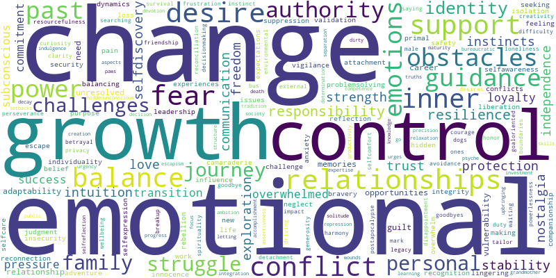
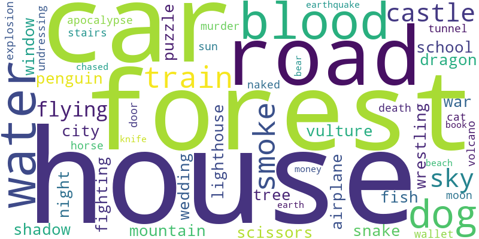

<h1 style="text-align:center;">Dreamverse State</h1>
<h2 style="text-align:center;">January 2024</h2>
<div style="padding: 80px;"><html>
    <head>
        <meta charset="utf-8">
        
            <script src="lib/bindings/utils.js"></script>
            <link rel="stylesheet" href="https://cdnjs.cloudflare.com/ajax/libs/vis-network/9.1.2/dist/dist/vis-network.min.css" integrity="sha512-WgxfT5LWjfszlPHXRmBWHkV2eceiWTOBvrKCNbdgDYTHrT2AeLCGbF4sZlZw3UMN3WtL0tGUoIAKsu8mllg/XA==" crossorigin="anonymous" referrerpolicy="no-referrer" />
            <script src="https://cdnjs.cloudflare.com/ajax/libs/vis-network/9.1.2/dist/vis-network.min.js" integrity="sha512-LnvoEWDFrqGHlHmDD2101OrLcbsfkrzoSpvtSQtxK3RMnRV0eOkhhBN2dXHKRrUU8p2DGRTk35n4O8nWSVe1mQ==" crossorigin="anonymous" referrerpolicy="no-referrer"></script>
            
        
<center>
<h1></h1>
</center>

<!-- <link rel="stylesheet" href="../node_modules/vis/dist/vis.min.css" type="text/css" />
<script type="text/javascript" src="../node_modules/vis/dist/vis.js"> </script>-->
        <link
          href="https://cdn.jsdelivr.net/npm/bootstrap@5.0.0-beta3/dist/css/bootstrap.min.css"
          rel="stylesheet"
          integrity="sha384-eOJMYsd53ii+scO/bJGFsiCZc+5NDVN2yr8+0RDqr0Ql0h+rP48ckxlpbzKgwra6"
          crossorigin="anonymous"
        />
        <script
          src="https://cdn.jsdelivr.net/npm/bootstrap@5.0.0-beta3/dist/js/bootstrap.bundle.min.js"
          integrity="sha384-JEW9xMcG8R+pH31jmWH6WWP0WintQrMb4s7ZOdauHnUtxwoG2vI5DkLtS3qm9Ekf"
          crossorigin="anonymous"
        ></script>


        <center>
          <h1></h1>
        </center>
        <style type="text/css">

             #mynetwork {
                 width: 100%;
                 height: 750px;
                 background-color: #2b252f;
                 border: 1px solid lightgray;
                 position: relative;
                 float: left;
             }

             

             

             
        </style>
    </head>


    <body>
        <div class="card" style="width: 100%">
            
            
            <div id="mynetwork" class="card-body"></div>
        </div>

        
        

        <script type="text/javascript">

              // initialize global variables.
              var edges;
              var nodes;
              var allNodes;
              var allEdges;
              var nodeColors;
              var originalNodes;
              var network;
              var container;
              var options, data;
              var filter = {
                  item : '',
                  property : '',
                  value : []
              };

              

              

              // This method is responsible for drawing the graph, returns the drawn network
              function drawGraph() {
                  var container = document.getElementById('mynetwork');

                  

                  // parsing and collecting nodes and edges from the python
                  nodes = new vis.DataSet([{"color": "purple", "font": {"color": "white"}, "id": "exploration", "label": "exploration", "shape": "dot", "title": "exploration"}, {"color": "purple", "font": {"color": "white"}, "id": "fear", "label": "fear", "shape": "dot", "title": "fear"}, {"color": "purple", "font": {"color": "white"}, "id": "growth", "label": "growth", "shape": "dot", "title": "growth"}, {"color": "red", "font": {"color": "white"}, "id": "control", "label": "control", "shape": "dot", "title": "control"}, {"color": "purple", "font": {"color": "white"}, "id": "resilience", "label": "resilience", "shape": "dot", "title": "resilience"}, {"color": "purple", "font": {"color": "white"}, "id": "resourcefulness", "label": "resourcefulness", "shape": "dot", "title": "resourcefulness"}, {"color": "purple", "font": {"color": "white"}, "id": "adaptability", "label": "adaptability", "shape": "dot", "title": "adaptability"}, {"color": "red", "font": {"color": "white"}, "id": "obstacles", "label": "obstacles", "shape": "dot", "title": "obstacles"}, {"color": "purple", "font": {"color": "white"}, "id": "selfcare", "label": "selfcare", "shape": "dot", "title": "selfcare"}, {"color": "red", "font": {"color": "white"}, "id": "challenges", "label": "challenges", "shape": "dot", "title": "challenges"}, {"color": "purple", "font": {"color": "white"}, "id": "city", "label": "city", "shape": "dot", "title": "city"}, {"color": "purple", "font": {"color": "white"}, "id": "conflict", "label": "conflict", "shape": "dot", "title": "conflict"}, {"color": "purple", "font": {"color": "white"}, "id": "independence", "label": "independence", "shape": "dot", "title": "independence"}, {"color": "purple", "font": {"color": "white"}, "id": "selfdiscovery", "label": "selfdiscovery", "shape": "dot", "title": "selfdiscovery"}, {"color": "purple", "font": {"color": "white"}, "id": "forest", "label": "forest", "shape": "dot", "title": "forest"}, {"color": "purple", "font": {"color": "white"}, "id": "road", "label": "road", "shape": "dot", "title": "road"}, {"color": "purple", "font": {"color": "white"}, "id": "change", "label": "change", "shape": "dot", "title": "change"}, {"color": "purple", "font": {"color": "white"}, "id": "family", "label": "family", "shape": "dot", "title": "family"}, {"color": "red", "font": {"color": "white"}, "id": "guidance", "label": "guidance", "shape": "dot", "title": "guidance"}, {"color": "purple", "font": {"color": "white"}, "id": "war", "label": "war", "shape": "dot", "title": "war"}, {"color": "purple", "font": {"color": "white"}, "id": "car", "label": "car", "shape": "dot", "title": "car"}, {"color": "red", "font": {"color": "white"}, "id": "house", "label": "house", "shape": "dot", "title": "house"}, {"color": "purple", "font": {"color": "white"}, "id": "power", "label": "power", "shape": "dot", "title": "power"}, {"color": "red", "font": {"color": "white"}, "id": "support", "label": "support", "shape": "dot", "title": "support"}, {"color": "red", "font": {"color": "white"}, "id": "nostalgia", "label": "nostalgia", "shape": "dot", "title": "nostalgia"}, {"color": "purple", "font": {"color": "white"}, "id": "freedom", "label": "freedom", "shape": "dot", "title": "freedom"}, {"color": "purple", "font": {"color": "white"}, "id": "liberation", "label": "liberation", "shape": "dot", "title": "liberation"}, {"color": "purple", "font": {"color": "white"}, "id": "stability", "label": "stability", "shape": "dot", "title": "stability"}, {"color": "red", "font": {"color": "white"}, "id": "balance", "label": "balance", "shape": "dot", "title": "balance"}, {"color": "red", "font": {"color": "white"}, "id": "curiosity", "label": "curiosity", "shape": "dot", "title": "curiosity"}, {"color": "purple", "font": {"color": "white"}, "id": "personal growth", "label": "personal growth", "shape": "dot", "title": "personal growth"}, {"color": "purple", "font": {"color": "white"}, "id": "journey", "label": "journey", "shape": "dot", "title": "journey"}, {"color": "purple", "font": {"color": "white"}, "id": "overwhelm", "label": "overwhelm", "shape": "dot", "title": "overwhelm"}, {"color": "purple", "font": {"color": "white"}, "id": "naked", "label": "naked", "shape": "dot", "title": "naked"}, {"color": "purple", "font": {"color": "white"}, "id": "undressing", "label": "undressing", "shape": "dot", "title": "undressing"}, {"color": "purple", "font": {"color": "white"}, "id": "wallet", "label": "wallet", "shape": "dot", "title": "wallet"}, {"color": "purple", "font": {"color": "white"}, "id": "reconnection", "label": "reconnection", "shape": "dot", "title": "reconnection"}, {"color": "red", "font": {"color": "white"}, "id": "determination", "label": "determination", "shape": "dot", "title": "determination"}, {"color": "purple", "font": {"color": "white"}, "id": "struggle", "label": "struggle", "shape": "dot", "title": "struggle"}, {"color": "purple", "font": {"color": "white"}, "id": "progress", "label": "progress", "shape": "dot", "title": "progress"}, {"color": "purple", "font": {"color": "white"}, "id": "perseverance", "label": "perseverance", "shape": "dot", "title": "perseverance"}, {"color": "purple", "font": {"color": "white"}, "id": "responsibility", "label": "responsibility", "shape": "dot", "title": "responsibility"}, {"color": "purple", "font": {"color": "white"}, "id": "water", "label": "water", "shape": "dot", "title": "water"}, {"color": "purple", "font": {"color": "white"}, "id": "fun", "label": "fun", "shape": "dot", "title": "fun"}, {"color": "purple", "font": {"color": "white"}, "id": "playfulness", "label": "playfulness", "shape": "dot", "title": "playfulness"}, {"color": "purple", "font": {"color": "white"}, "id": "attachment", "label": "attachment", "shape": "dot", "title": "attachment"}, {"color": "purple", "font": {"color": "white"}, "id": "guilt", "label": "guilt", "shape": "dot", "title": "guilt"}, {"color": "purple", "font": {"color": "white"}, "id": "commitment", "label": "commitment", "shape": "dot", "title": "commitment"}, {"color": "purple", "font": {"color": "white"}, "id": "love", "label": "love", "shape": "dot", "title": "love"}, {"color": "purple", "font": {"color": "white"}, "id": "adventure", "label": "adventure", "shape": "dot", "title": "adventure"}, {"color": "purple", "font": {"color": "white"}, "id": "leadership", "label": "leadership", "shape": "dot", "title": "leadership"}, {"color": "purple", "font": {"color": "white"}, "id": "boundaries", "label": "boundaries", "shape": "dot", "title": "boundaries"}, {"color": "purple", "font": {"color": "white"}, "id": "inner conflict", "label": "inner conflict", "shape": "dot", "title": "inner conflict"}, {"color": "purple", "font": {"color": "white"}, "id": "identity", "label": "identity", "shape": "dot", "title": "identity"}, {"color": "purple", "font": {"color": "white"}, "id": "detachment", "label": "detachment", "shape": "dot", "title": "detachment"}, {"color": "purple", "font": {"color": "white"}, "id": "problemsolving", "label": "problemsolving", "shape": "dot", "title": "problemsolving"}, {"color": "purple", "font": {"color": "white"}, "id": "structure", "label": "structure", "shape": "dot", "title": "structure"}, {"color": "purple", "font": {"color": "white"}, "id": "tradition", "label": "tradition", "shape": "dot", "title": "tradition"}, {"color": "purple", "font": {"color": "white"}, "id": "subconscious", "label": "subconscious", "shape": "dot", "title": "subconscious"}, {"color": "purple", "font": {"color": "white"}, "id": "society", "label": "society", "shape": "dot", "title": "society"}]);
                  edges = new vis.DataSet([{"from": "exploration", "to": "fear", "value": 2}, {"from": "fear", "to": "power", "value": 2}, {"from": "fear", "to": "control", "value": 2}, {"from": "fear", "to": "overwhelm", "value": 2}, {"from": "growth", "to": "control", "value": 2}, {"from": "control", "to": "stability", "value": 2}, {"from": "control", "to": "determination", "value": 2}, {"from": "control", "to": "balance", "value": 3}, {"from": "control", "to": "boundaries", "value": 2}, {"from": "control", "to": "inner conflict", "value": 2}, {"from": "control", "to": "power", "value": 2}, {"from": "control", "to": "curiosity", "value": 2}, {"from": "resilience", "to": "resourcefulness", "value": 2}, {"from": "resilience", "to": "adaptability", "value": 2}, {"from": "resilience", "to": "obstacles", "value": 2}, {"from": "resilience", "to": "selfcare", "value": 2}, {"from": "resilience", "to": "challenges", "value": 2}, {"from": "obstacles", "to": "determination", "value": 2}, {"from": "obstacles", "to": "selfcare", "value": 2}, {"from": "obstacles", "to": "support", "value": 3}, {"from": "obstacles", "to": "challenges", "value": 2}, {"from": "obstacles", "to": "guidance", "value": 2}, {"from": "selfcare", "to": "balance", "value": 2}, {"from": "selfcare", "to": "responsibility", "value": 2}, {"from": "challenges", "to": "house", "value": 2}, {"from": "challenges", "to": "support", "value": 3}, {"from": "challenges", "to": "guidance", "value": 2}, {"from": "challenges", "to": "war", "value": 2}, {"from": "challenges", "to": "commitment", "value": 2}, {"from": "challenges", "to": "selfdiscovery", "value": 3}, {"from": "city", "to": "conflict", "value": 2}, {"from": "conflict", "to": "determination", "value": 2}, {"from": "conflict", "to": "guidance", "value": 2}, {"from": "conflict", "to": "identity", "value": 2}, {"from": "conflict", "to": "progress", "value": 2}, {"from": "independence", "to": "selfdiscovery", "value": 2}, {"from": "selfdiscovery", "to": "house", "value": 2}, {"from": "selfdiscovery", "to": "commitment", "value": 2}, {"from": "forest", "to": "road", "value": 2}, {"from": "change", "to": "family", "value": 2}, {"from": "change", "to": "guidance", "value": 2}, {"from": "change", "to": "war", "value": 2}, {"from": "family", "to": "house", "value": 2}, {"from": "family", "to": "nostalgia", "value": 2}, {"from": "guidance", "to": "determination", "value": 2}, {"from": "guidance", "to": "support", "value": 2}, {"from": "guidance", "to": "war", "value": 2}, {"from": "guidance", "to": "progress", "value": 2}, {"from": "war", "to": "love", "value": 2}, {"from": "car", "to": "house", "value": 2}, {"from": "car", "to": "power", "value": 2}, {"from": "car", "to": "support", "value": 2}, {"from": "house", "to": "nostalgia", "value": 2}, {"from": "house", "to": "support", "value": 2}, {"from": "power", "to": "support", "value": 2}, {"from": "support", "to": "responsibility", "value": 2}, {"from": "nostalgia", "to": "balance", "value": 2}, {"from": "nostalgia", "to": "naked", "value": 2}, {"from": "nostalgia", "to": "undressing", "value": 2}, {"from": "nostalgia", "to": "wallet", "value": 2}, {"from": "nostalgia", "to": "reconnection", "value": 2}, {"from": "freedom", "to": "liberation", "value": 2}, {"from": "freedom", "to": "stability", "value": 2}, {"from": "liberation", "to": "stability", "value": 2}, {"from": "stability", "to": "balance", "value": 2}, {"from": "stability", "to": "curiosity", "value": 2}, {"from": "balance", "to": "determination", "value": 2}, {"from": "balance", "to": "struggle", "value": 3}, {"from": "balance", "to": "responsibility", "value": 2}, {"from": "balance", "to": "adventure", "value": 2}, {"from": "balance", "to": "leadership", "value": 2}, {"from": "balance", "to": "curiosity", "value": 2}, {"from": "curiosity", "to": "determination", "value": 2}, {"from": "curiosity", "to": "adventure", "value": 2}, {"from": "curiosity", "to": "identity", "value": 2}, {"from": "curiosity", "to": "leadership", "value": 2}, {"from": "curiosity", "to": "progress", "value": 2}, {"from": "curiosity", "to": "problemsolving", "value": 2}, {"from": "curiosity", "to": "structure", "value": 2}, {"from": "curiosity", "to": "tradition", "value": 2}, {"from": "curiosity", "to": "subconscious", "value": 2}, {"from": "curiosity", "to": "society", "value": 2}, {"from": "personal growth", "to": "journey", "value": 2}, {"from": "naked", "to": "undressing", "value": 2}, {"from": "naked", "to": "wallet", "value": 2}, {"from": "undressing", "to": "wallet", "value": 2}, {"from": "determination", "to": "struggle", "value": 2}, {"from": "determination", "to": "progress", "value": 3}, {"from": "determination", "to": "perseverance", "value": 2}, {"from": "responsibility", "to": "water", "value": 2}, {"from": "responsibility", "to": "guilt", "value": 2}, {"from": "water", "to": "fun", "value": 2}, {"from": "water", "to": "playfulness", "value": 2}, {"from": "water", "to": "attachment", "value": 2}, {"from": "guilt", "to": "detachment", "value": 2}, {"from": "leadership", "to": "identity", "value": 2}]);

                  nodeColors = {};
                  allNodes = nodes.get({ returnType: "Object" });
                  for (nodeId in allNodes) {
                    nodeColors[nodeId] = allNodes[nodeId].color;
                  }
                  allEdges = edges.get({ returnType: "Object" });
                  // adding nodes and edges to the graph
                  data = {nodes: nodes, edges: edges};

                  var options = {
    "configure": {
        "enabled": false
    },
    "edges": {
        "color": {
            "inherit": true
        },
        "smooth": {
            "enabled": true,
            "type": "dynamic"
        }
    },
    "interaction": {
        "dragNodes": true,
        "hideEdgesOnDrag": false,
        "hideNodesOnDrag": false
    },
    "physics": {
        "enabled": true,
        "stabilization": {
            "enabled": true,
            "fit": true,
            "iterations": 1000,
            "onlyDynamicEdges": false,
            "updateInterval": 50
        }
    }
};

                  


                  

                  network = new vis.Network(container, data, options);

                  

                  

                  


                  

                  return network;

              }
              drawGraph();
        </script>
    </body>
</html></div><h1 style="text-align:center;"> </h1>
<h2 style="text-align:center;">Shared Themes</h2>
<div style="text-align:center;"></div>
<h1 style="text-align:center;"> </h1>
<h2 style="text-align:center;">Shared Symbols</h2>
<div style="text-align:center;"></div>